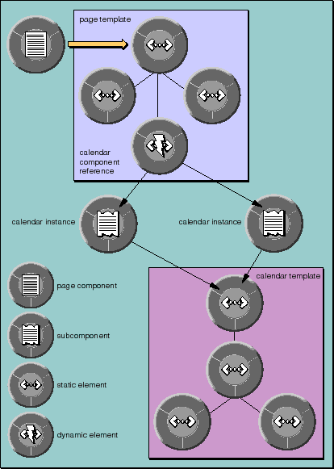

Previous Section
Previous Section
An element ID is assigned to each instance of a subcomponent. When a request-handling message traverses an object graph and reaches the component reference, it resolves references to its instances according to the element ID of each instance.

Figure 30. An Object Graph for a Page With a Subcomponent
 Table of Contents
Table of Contents  Next Section
Next Section